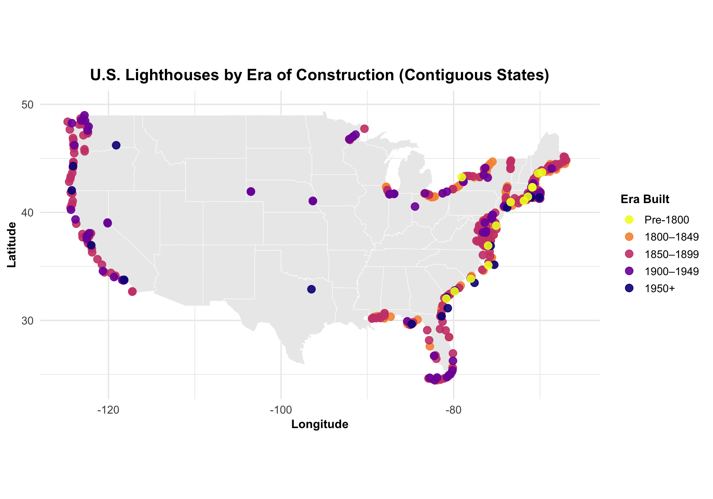
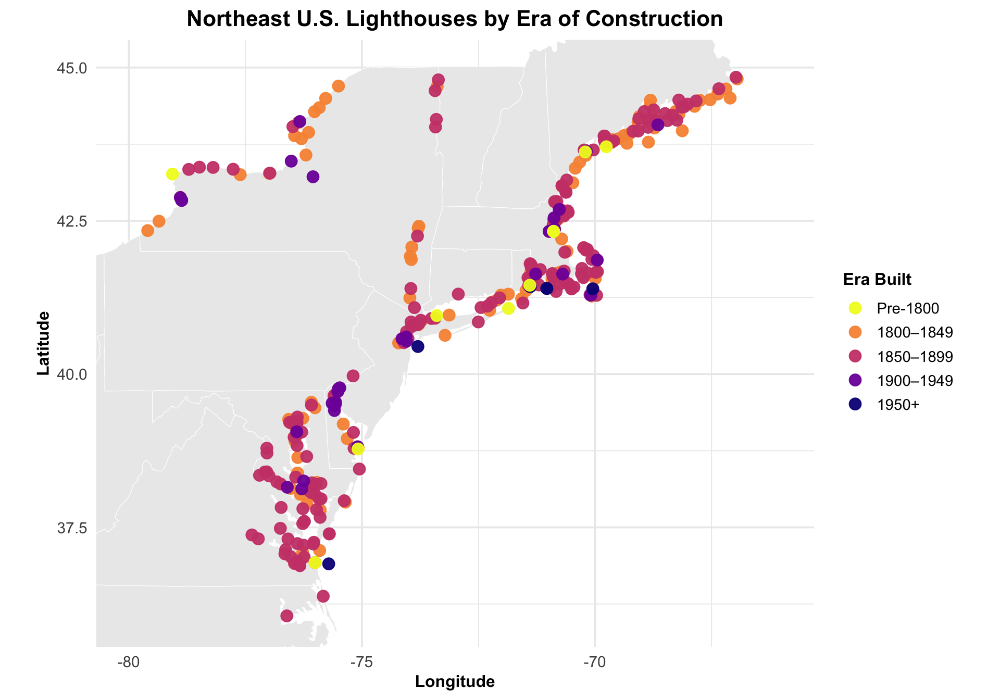
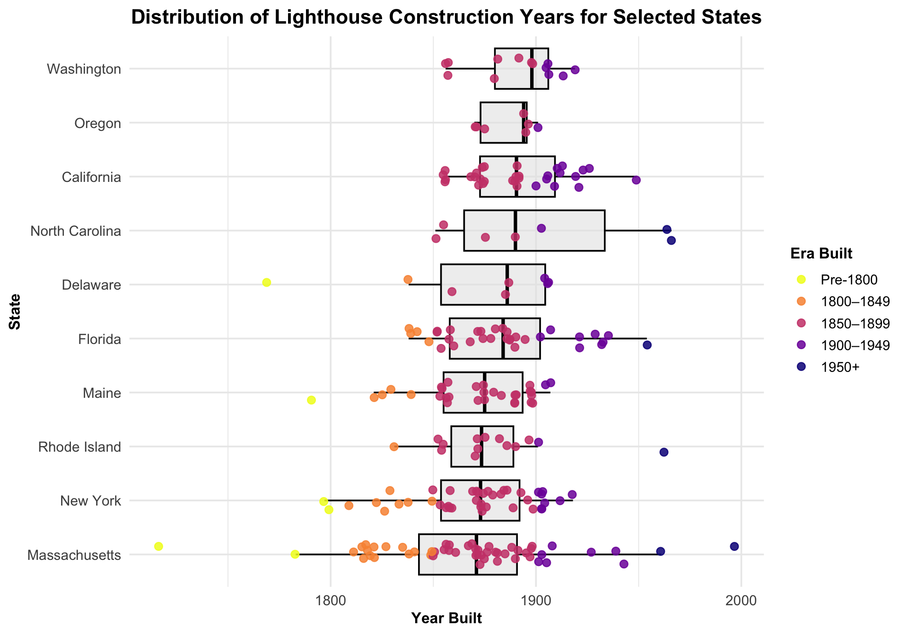
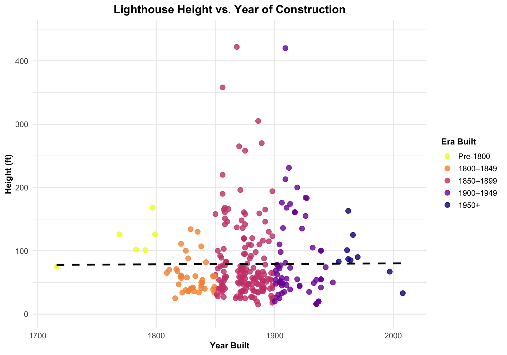

Lighthouses are singular pieces of coastal infrastructure that serve a functional purpose - guiding mariners - but also embody geographic and historical narratives. The Wikipedia page “List of lighthouses in the United States” compiles standardized information on U.S. lighthouses including location (latitude/longitude), year established, tower height, range, and notes on status. Rather than manually copying entries or using a secondary dataset, we scrape the canonical list directly from Wikipedia. This ensures reproducibility and ties our analysis to a visible public source that encodes the selection and categorization decisions of the community that maintains the page.
# Load all required packages quietly
suppressMessages({
library(tidyverse)
library(rvest)
library(httr)
library(ggrepel)
library(viridis)
})The lighthouse data are not stored in a single master table on Wikipedia. Instead, the page Lists of lighthouses in the United States serves as an index linking to individual state-level pages. Each state page contains one or more tables listing lighthouses and their attributes. To build a comprehensive dataset, we first retrieve the index page, extract all links to state-specific lighthouse pages, and then programmatically iterate over those links to collect their tables.
# ---- 1. Read the index page (main lighthouse list page) ----
index_url <- "https://en.wikipedia.org/wiki/List_of_lighthouses_in_the_United_States"
index_page <- GET(
index_url,
user_agent("Mozilla/5.0 (R lighthouse data project)")
) %>% read_html()
# ---- 2. Extract links to state-level lighthouse pages ----
state_links <- index_page %>%
html_elements("a") %>%
html_attr("href") %>%
na.omit() %>%
unique() %>%
# Only keep links starting with lighthouse list pattern
keep(~ str_detect(., "^/wiki/List_of_lighthouses_in_")) %>%
# Add base URL
paste0("https://en.wikipedia.org", .)
# Remove main U.S. page and known non-state pages
state_links <- state_links %>%
keep(~ !str_detect(.x, "List_of_lighthouses_in_the_United_States$") &
!str_detect(.x, "List_of_lighthouses_in_the_United_States_territories"))
length(state_links) # Should be roughly 50+## [1] 76# ---- 3. Function to retrieve lighthouse tables from a single state page ----
get_lighthouse_tables <- function(url) {
tryCatch({
page <- read_html(url)
# Clean state name from URL
state_name <- url %>%
str_replace("https://en.wikipedia.org/wiki/List_of_lighthouses_in_", "") %>%
str_replace_all("_", " ") %>%
str_replace_all("\\s*\\(.*\\)", "") %>% # remove parentheses
str_replace_all("%[0-9A-F]{2}", "") %>% # rough URL decoding
str_replace_all("#.*$", "") %>% # remove fragments like #Illinois
str_trim()
# Extract tables with class wikitable
tables <- page %>% html_elements("table.wikitable")
tables <- map(tables, function(tab) {
df <- html_table(tab, fill = TRUE)
# Only keep tables with a Name column
if (!any(str_detect(names(df), regex("name", ignore_case = TRUE)))) return(NULL)
# Standardize column names
names(df) <- names(df) %>%
{ifelse(is.na(.) | . == "", paste0("V", seq_along(.)), .)} %>%
tolower() %>%
str_replace_all("\\s+", "_")
# Add state column
df$state <- state_name
# Extract numeric height from any column containing "height"
height_col <- grep("height", names(df), ignore.case = TRUE)
if (length(height_col) > 0) {
df$height <- df[[height_col[1]]] # take first matching height column
} else {
df$height <- NA_character_
}
df
})
tables <- compact(tables) # remove NULL tables
tables
}, error = function(e) {
message("Failed to read ", url, ": ", e$message)
NULL
})
}
# ---- 4. Scrape all state pages with a short pause between requests ----
all_tables <- map(state_links, ~{
Sys.sleep(0.5) # polite delay
get_lighthouse_tables(.x)
})
# ---- 5. Flatten list of tables ----
all_tables <- flatten(all_tables)
# ---- 6. Standardize column names and convert all columns to character ----
all_tables <- map(all_tables, ~{
df <- .
colnames(df) <- colnames(df) %>%
{ifelse(is.na(.) | . == "", paste0("V", seq_along(.)), .)} %>%
tolower() %>%
str_replace_all("\\s+", "_")
# Ensure essential columns exist
if(!"state" %in% colnames(df)) df$state <- NA_character_
if(!"name" %in% colnames(df)) df$name <- NA_character_
if(!"location" %in% colnames(df)) df$location <- NA_character_
if(!"height" %in% colnames(df)) df$height <- NA_character_
colnames(df) <- make.unique(colnames(df), sep = "_dup_")
df %>% mutate(across(everything(), as.character))
})
# ---- 7. Combine into master dataframe ----
lighthouses_all <- bind_rows(all_tables)
# ---- 8. Clean and select relevant columns ----
lighthouses_clean <- lighthouses_all %>%
fill(state, .direction = "down") %>%
mutate(
across(where(is.character), ~ str_squish(.) %>% str_replace_all("\n", " ")),
year_first_lit = str_extract(year_first_lit, "\\d{4}") %>% as.integer(),
height_ft = str_extract(height, "\\d+\\.?\\d*") %>% as.numeric()
) %>%
filter(!is.na(name) & name != "") %>%
select(-height) # keep numeric height_ft only
# ---- 9. Sanity Checks ----
dim(lighthouses_clean)## [1] 1595 77head(lighthouses_clean, 10)## # A tibble: 10 × 77
## name image location coordinates year_first_lit automated year_deactivated
## <chr> <chr> <chr> <chr> <int> <chr> <chr>
## 1 Avery R… <NA> Machias… .mw-parser… 1875 1926 1947(Destroyed)
## 2 Baker I… <NA> Cranber… 44°14′17″N… 1828 1966 Active
## 3 Bass Ha… <NA> Tremont… 44°13′18″N… 1858 1974 Active
## 4 Bear Is… <NA> Cranber… 44°17′02″N… 1839 1989 Active(Inactive…
## 5 Blue Hi… <NA> Blue Hi… 44°14′56″N… 1857 1935 1935 (Former)Ac…
## 6 Boon Is… <NA> York(Bo… 43°07′17″N… 1811 1980 Active
## 7 Browns … <NA> Vinalha… 44°06′42″N… 1832 1987 Active
## 8 Burnt C… <NA> Swan's … 44°08′03″N… 1872 1975 Active
## 9 Burnt I… <NA> Boothba… 43°49′31″N… 1821 1988 Active
## 10 Cape El… <NA> Cape El… 43°33′58″N… 1828 1963 (Ea… 1924 (West)Acti…
## # ℹ 70 more variables: current_lens <chr>, focal_height <chr>, state <chr>,
## # status <chr>, light <chr>, `name[9]` <chr>, focalheight <chr>,
## # `built[note_1]` <chr>, deactivated <chr>, tower_height <chr>,
## # waterway <chr>, year_built <chr>, lens_used <chr>, uscgnumber <chr>,
## # admiraltynumber <chr>, notes <chr>, municipality <chr>, established <chr>,
## # `tower_heightin_meters_(ft)` <chr>, `focal_planein_meters_(ft)` <chr>,
## # current_status <chr>, current_condition <chr>, yearbuilt <chr>, …With lighthouse tables collected from all state-level pages, we now clean and standardize the combined dataset so it can be used for analysis and mapping. Because the tables vary slightly across states, we select only the most relevant columns - such as state, name, coordinates, year first lit, height, etc. - using flexible matching. We then fill down missing state values where necessary, clean text fields to remove extra whitespace and line breaks, and extract numeric values from the year and height columns. We also remove rows that do not correspond to actual lighthouses (such as repeated headers or notes) and drop original text-based columns once numeric versions have been created. The result is a consistent dataset ready for filtering, searching, and geographic visualization.
lighthouses_clean <- lighthouses_all %>%
# ---- 1. Ensure necessary columns exist ----
mutate(
# Ensure height variants
height = if ("height" %in% colnames(.)) height else NA_character_,
height_ft = if ("height_ft" %in% colnames(.)) height_ft else NA_character_,
# Ensure automated variants exist
automated = if ("automated" %in% colnames(.)) automated else NA_character_,
year_automated = if ("year_automated" %in% colnames(.)) year_automated else NA_character_
) %>%
# ---- 2. Select relevant columns plus potential variants ----
select(any_of(c(
"state",
"name",
"location",
"coordinates",
"year_first_lit",
"automated", "year_automated",
"current_lens",
"height", "height_ft"
))) %>%
# ---- 3. Fill down state values ----
fill(state, .direction = "down") %>%
# ---- 4. Clean text fields ----
mutate(across(where(is.character), ~ str_squish(.) %>% str_replace_all("\n", " "))) %>%
# ---- 5. Consolidate height columns to a single numeric column ----
mutate(
height = coalesce(height, height_ft),
height_ft = str_extract(height, "\\d+\\.?\\d*") %>% as.numeric()
) %>%
# ---- 6. Consolidate automated column safely ----
mutate(
automated = coalesce(automated, year_automated)
) %>%
# ---- 7. Remove rows without a lighthouse name ----
filter(!is.na(name) & name != "") %>%
# ---- 8. Drop temporary or redundant columns ----
select(-c(height, year_automated)) %>%
# ---- 9. Reorder columns exactly as desired ----
select(
state,
name,
location,
coordinates,
year_first_lit,
automated,
current_lens,
height_ft
)
# ---- Sanity Checks ----
# Check number of rows and columns
dim(lighthouses_clean)## [1] 1595 8# Preview first 10 rows of key columns
key_cols <- c("name", "location", "coordinates", "year_first_lit",
"automated", "current_lens", "height_ft", "state")
head(lighthouses_clean %>% select(any_of(key_cols)), 10)## # A tibble: 10 × 8
## name location coordinates year_first_lit automated current_lens height_ft
## <chr> <chr> <chr> <chr> <chr> <chr> <dbl>
## 1 Avery R… Machias… .mw-parser… 1875 1926 None 56
## 2 Baker I… Cranber… 44°14′17″N… 1828 (Former)… 1966 Fourth-orde… 105
## 3 Bass Ha… Tremont… 44°13′18″N… 1858 1974 Fourth-orde… 56
## 4 Bear Is… Cranber… 44°17′02″N… 1839 (Former)… 1989 Plastic 100
## 5 Blue Hi… Blue Hi… 44°14′56″N… 1857 (Former)… 1935 Unknown 25
## 6 Boon Is… York(Bo… 43°07′17″N… 1811 (Former)… 1980 VRB-25 137
## 7 Browns … Vinalha… 44°06′42″N… 1832 (Former)… 1987 Fifth-order… 39
## 8 Burnt C… Swan's … 44°08′03″N… 1872 1975 Unknown 75
## 9 Burnt I… Boothba… 43°49′31″N… 1821 1988 Electrified… 61
## 10 Cape El… Cape El… 43°33′58″N… 1828 (West to… 1963 (Ea… VRB-25 129
## # ℹ 1 more variable: state <chr># Inspect structure
glimpse(lighthouses_clean)## Rows: 1,595
## Columns: 8
## $ state <chr> "Maine", "Maine", "Maine", "Maine", "Maine", "Maine", "…
## $ name <chr> "Avery Rock Light", "Baker Island Light", "Bass Harbor …
## $ location <chr> "Machias(Machias Bay)", "Cranberry Isles(Baker Island)"…
## $ coordinates <chr> ".mw-parser-output .geo-default,.mw-parser-output .geo-…
## $ year_first_lit <chr> "1875", "1828 (Former)1855 (Current)", "1858", "1839 (F…
## $ automated <chr> "1926", "1966", "1974", "1989", "1935", "1980", "1987",…
## $ current_lens <chr> "None", "Fourth-order Fresnel", "Fourth-order Fresnel",…
## $ height_ft <dbl> 56, 105, 56, 100, 25, 137, 39, 75, 61, 129, 88, 37, 59,…Many of the coordinates in the dataset are currently stored as crude strings, often in degrees with directional indicators (e.g., “42.9672°N 70.6231°W”). To make these usable for mapping and spatial analysis, we convert the coordinates into decimal degrees. This involves splitting the latitude and longitude, removing any directional symbols, and applying the correct sign based on whether the coordinate is north/south or east/west. After this transformation, the dataset will have numeric lat and lon columns, allowing us to plot lighthouse locations on maps or perform geographic filtering.
lighthouses_clean <- lighthouses_clean %>%
mutate(
# Remove parentheses/brackets and extra spaces
coords_clean = str_remove_all(coordinates, "\\(.*?\\)|\\[.*?\\]") %>% str_squish(),
# Extract lat/lon with decimal and hemisphere
lat_raw = str_extract(coords_clean, "[-]?\\d+\\.?\\d*°?\\s*[NS]"),
lon_raw = str_extract(coords_clean, "[-]?\\d+\\.?\\d*°?\\s*[EW]"),
# Convert to numeric
lat = as.numeric(str_remove_all(lat_raw, "[°NS]")),
lon = as.numeric(str_remove_all(lon_raw, "[°EW]")),
# Apply sign based on hemisphere
lat = ifelse(str_detect(lat_raw, "S"), -lat, lat),
lon = ifelse(str_detect(lon_raw, "W"), -lon, lon)
) %>%
filter(!is.na(lat) & !is.na(lon))
# ---- Sanity Check ----
# Preview first 10 rows of lat/lon
lighthouses_clean %>% select(name, state, lat, lon) %>% head(10)## # A tibble: 10 × 4
## name state lat lon
## <chr> <chr> <dbl> <dbl>
## 1 Avery Rock Light Maine 44.7 -67.3
## 2 Baker Island Light Maine 44.2 -68.2
## 3 Bass Harbor Head Light Maine 44.2 -68.3
## 4 Bear Island Light Maine 44.3 -68.3
## 5 Blue Hill Bay Light Maine 44.2 -68.5
## 6 Boon Island Light Maine 43.1 -70.5
## 7 Browns Head Light Maine 44.1 -68.9
## 8 Burnt Coat Harbor Light Maine 44.1 -68.4
## 9 Burnt Island Light Maine 43.8 -69.6
## 10 Cape Elizabeth Lights Maine 43.6 -70.2Once the lighthouse dataset has been cleaned and coordinates converted, it becomes useful to explore it dynamically. A simple way to do this is by defining a search function that allows filtering by one or more criteria such as state, name, age, or height. This enables quick querying of the dataset to answer questions like “Which lighthouses are taller than 150 feet?” or “Show all lighthouses built before 1850 in Massachusetts.” By wrapping these filters into a function, the dataset becomes interactive and easier to analyze or visualize on a map.
# Function to search/filter lighthouses
search_lighthouses <- function(df,
name_search = NULL,
state_search = NULL,
location_search = NULL,
coordinates_search = NULL,
min_year = NULL,
max_year = NULL,
automated_search = NULL,
lens_search = NULL,
min_height = NULL,
max_height = NULL) {
results <- df
# Helper for safe text filtering
safe_text_filter <- function(column, value) {
str_detect(column, fixed(value, ignore_case = TRUE))
}
# ---- Text filters ----
if (!is.null(name_search)) results <- results %>% filter(safe_text_filter(name, name_search))
if (!is.null(state_search)) results <- results %>% filter(safe_text_filter(state, state_search))
if (!is.null(location_search)) results <- results %>% filter(safe_text_filter(location, location_search))
if (!is.null(coordinates_search))results <- results %>% filter(safe_text_filter(coordinates, coordinates_search))
if (!is.null(automated_search)) results <- results %>% filter(safe_text_filter(automated, automated_search))
if (!is.null(lens_search)) results <- results %>% filter(safe_text_filter(current_lens, lens_search))
# ---- Numeric filters ----
if (!is.null(min_year)) results <- results %>% filter(!is.na(year_first_lit) & year_first_lit >= min_year)
if (!is.null(max_year)) results <- results %>% filter(!is.na(year_first_lit) & year_first_lit <= max_year)
if (!is.null(min_height)) results <- results %>% filter(!is.na(height_ft) & height_ft >= min_height)
if (!is.null(max_height)) results <- results %>% filter(!is.na(height_ft) & height_ft <= max_height)
# ---- Return results ----
if (nrow(results) == 0) {
message("No lighthouses found matching these criteria.")
return(NULL)
} else {
return(results)
}
}
# ---- Example Usage ----
# All lighthouses taller than 150 ft
search_lighthouses(lighthouses_clean, min_height = 150)## # A tibble: 66 × 13
## state name location coordinates year_first_lit automated current_lens
## <chr> <chr> <chr> <chr> <chr> <chr> <chr>
## 1 Maine Monh… Monhega… 43°45′53″N… 1824 (Former)… 1959 VRB-25
## 2 Maine Segu… Georget… 43°42′27″N… 1795 (Former)… 1985 First-order…
## 3 Massachuset… Cape… Rockpor… 42°38′12″N… 1861 1979(Sou… VRB-25
## 4 Massachuset… Gay … Aquinnah 41°20′54″N… 1856[b] 1956 DCB-224
## 5 Massachuset… High… Truro(N… 41°23′27″N… 1857[10] 1987[10] LED
## 6 Massachuset… Hosp… Beverly 42°32′54″N… 1927 Unknown Unknown
## 7 Massachuset… Sank… Nantuck… 41°17′04″N… 1850 1965 DCB-224
## 8 New Hampshi… Nava… Navassa… 18°23′50.7… 1917 1929 None
## 9 Rhode Island Bloc… New Sho… 41°09′35″N… 1875 1990 First-order…
## 10 Vermont Nava… Navassa… 18°23′50.7… 1917 1929 None
## # ℹ 56 more rows
## # ℹ 6 more variables: height_ft <dbl>, coords_clean <chr>, lat_raw <chr>,
## # lon_raw <chr>, lat <dbl>, lon <dbl># Built before 1850 in Massachusetts
search_lighthouses(lighthouses_clean, state_search = "Massachusetts", max_year = 1849)## # A tibble: 21 × 13
## state name location coordinates year_first_lit automated current_lens
## <chr> <chr> <chr> <chr> <chr> <chr> <chr>
## 1 Massachuset… Bake… Salem 42°32′11″N… 1821 1972 190mm
## 2 Massachuset… Bird… Marion(… 41°40′10″N… 1819 1997(Rel… ML-300[5]
## 3 Massachuset… Bost… Boston(… 42°19′41″N… 1783 1998 Second-orde…
## 4 Massachuset… Ned … Mattapo… 41°39′03″N… 1838 1923 250mm
## 5 Massachuset… Old … Scituat… 42°12′17″N… 1811 1994(Rel… Replica lan…
## 6 Massachuset… Palm… New Bed… 41°37′37″N… 1849 1941 Fifth-order…
## 7 Massachuset… Plym… Plymouth 42°00′13″N… 1843[b] 1986 100mm
## 8 Massachuset… Poin… Hyannis 41°36′35″N… 1816[23] Never None
## 9 Massachuset… Bake… Salem 42°32′11″N… 1815 Never <NA>
## 10 Massachuset… Bost… Boston(… 42°19′41″N… 1716 Never <NA>
## # ℹ 11 more rows
## # ℹ 6 more variables: height_ft <dbl>, coords_clean <chr>, lat_raw <chr>,
## # lon_raw <chr>, lat <dbl>, lon <dbl># Lighthouses with Fresnel lenses
search_lighthouses(lighthouses_clean, lens_search = "Fresnel")## # A tibble: 77 × 13
## state name location coordinates year_first_lit automated current_lens
## <chr> <chr> <chr> <chr> <chr> <chr> <chr>
## 1 Maine Baker Islan… Cranber… 44°14′17″N… 1828 (Former)… 1966 Fourth-orde…
## 2 Maine Bass Harbor… Tremont… 44°13′18″N… 1858 1974 Fourth-orde…
## 3 Maine Browns Head… Vinalha… 44°06′42″N… 1832 (Former)… 1987 Fifth-order…
## 4 Maine Cape Neddic… York(Ca… 43°09′55″N… 1879 1987 Fourth-orde…
## 5 Maine Doubling Po… Arrowsic 43°52′57″N… 1898 1988 Fifth-order…
## 6 Maine Eagle Islan… Eagle I… 44°13′03″N… 1838 (Former)… 1959 Fourth-orde…
## 7 Maine Fort Point … Stockto… 44°28′02″N… 1836 (Former)… 1988 Fourth-orde…
## 8 Maine Heron Neck … Vinalha… 44°01′30″N… 1854 1984 Fifth-order…
## 9 Maine Owls Head L… Owls He… 44°05′32″N… 1825 1989 Fourth-orde…
## 10 Maine Pemaquid Po… Bristol 43°50′12″N… 1827 (Former)… 1934 Fourth-orde…
## # ℹ 67 more rows
## # ℹ 6 more variables: height_ft <dbl>, coords_clean <chr>, lat_raw <chr>,
## # lon_raw <chr>, lat <dbl>, lon <dbl># Specific partial name
search_lighthouses(lighthouses_clean, name_search = "Cape")## # A tibble: 28 × 13
## state name location coordinates year_first_lit automated current_lens
## <chr> <chr> <chr> <chr> <chr> <chr> <chr>
## 1 Maine Cape… Cape El… 43°33′58″N… 1828 (West to… 1963 (Ea… VRB-25
## 2 Maine Cape… York(Ca… 43°09′55″N… 1879 1987 Fourth-orde…
## 3 Massachuset… Cape… Rockpor… 42°38′12″N… 1861 1979(Sou… VRB-25
## 4 Massachuset… Cape… Edgarto… 41°25′10″N… 1893[b] 1943 300mm
## 5 New York Cape… Cape Vi… 44°7′10″N … 1904 Never None
## 6 Delaware Cape… Lewes(C… 38°47′25″N… 1825[8](First… Never None
## 7 Delaware Cape… Lewes(C… 38°46′41″N… 1769 Never None
## 8 Washington Cape… Cape Di… 46°16′33″N… 1856 1973 Fourth-orde…
## 9 Washington Cape… Tatoosh… 48°23′31″N… 1857 1977 None
## 10 Oregon Cape… Coos Bay .mw-parser… 1866 (First) … 1966 None
## # ℹ 18 more rows
## # ℹ 6 more variables: height_ft <dbl>, coords_clean <chr>, lat_raw <chr>,
## # lon_raw <chr>, lat <dbl>, lon <dbl># Multiple filters: Massachusetts, Fresnel lens, height > 100
search_lighthouses(lighthouses_clean,
state_search = "Massachusetts",
lens_search = "Fresnel",
min_height = 100)## # A tibble: 1 × 13
## state name location coordinates year_first_lit automated current_lens
## <chr> <chr> <chr> <chr> <chr> <chr> <chr>
## 1 Massachusetts Bost… Boston(… 42°19′41″N… 1783 1998 Second-orde…
## # ℹ 6 more variables: height_ft <dbl>, coords_clean <chr>, lat_raw <chr>,
## # lon_raw <chr>, lat <dbl>, lon <dbl>Mapping U.S. lighthouses by year of construction reveals both geographic and historical patterns. The oldest lighthouses are heavily clustered along the Northeast coast, reflecting early colonial settlement, dense shipping activity, and the establishment of major ports such as Boston and New York. Mid-19th-century constructions spread southward along the Atlantic coast, while the West Coast shows a later surge in the late 19th and early 20th centuries, consistent with westward expansion and the growth of Pacific maritime commerce.
# 1. Clean year: take last 4-digit number as 'Current' tower, handle missing years
lighthouse_map_data <- lighthouses_clean %>%
mutate(
year_numbers = str_extract_all(year_first_lit, "\\d{4}"),
year_num = map_dbl(year_numbers,
~ if(length(.x) == 0) NA_real_
else as.numeric(min(.x)))
) %>%
# Keep only rows with valid year and coordinates
filter(!is.na(lat) & !is.na(lon) & !is.na(year_num)) %>%
# 2. Create historical era bins for stronger visual contrast
mutate(
era = case_when(
year_num < 1800 ~ "Pre-1800",
year_num >= 1800 & year_num < 1850 ~ "1800–1849",
year_num >= 1850 & year_num < 1900 ~ "1850–1899",
year_num >= 1900 & year_num < 1950 ~ "1900–1949",
year_num >= 1950 ~ "1950+"
),
era = factor(era, levels = c("Pre-1800","1800–1849","1850–1899","1900–1949","1950+"))
) %>%
# 3. Reorder so earliest era is drawn last (appears on top)
arrange(factor(era, levels = c("1800–1849","1850–1899","1900–1949","1950+","Pre-1800")))
# ---- 4. Get U.S. map data ----
us_map <- ggplot2::map_data("state")
# 5. Full Contiguous U.S. map: filter to contiguous bounds
lighthouse_contiguous <- lighthouse_map_data %>%
filter(lon >= -125 & lon <= -66,
lat >= 24 & lat <= 50)
# 6. ---- Display ----
theme_set(theme_minimal(base_size = 14)) # consistent theme
ggplot() +
# U.S. states as base map
geom_polygon(data = us_map, aes(x = long, y = lat, group = group),
fill = "gray92", color = "white", linewidth = 0.2) +
# Lighthouse points (solid circles, no outline)
geom_point(data = lighthouse_contiguous,
aes(x = lon, y = lat, color = era),
size = 3.2, alpha = 0.9) +
# Discrete color scale emphasizes early historical clusters
scale_color_viridis_d(option = "plasma", direction = -1, name = "Era Built") +
labs(title = "U.S. Lighthouses by Era of Construction (Contiguous States)",
x = "Longitude", y = "Latitude") +
coord_quickmap(xlim = c(-125, -66), ylim = c(24, 50)) +
theme(
plot.title = element_text(face = "bold", size = 16, hjust = 0.5),
plot.subtitle = element_text(size = 12, hjust = 0.5),
axis.title.x = element_text(face = "bold", size = 12),
axis.title.y = element_text(face = "bold", size = 12),
legend.title = element_text(face = "bold", size = 12),
legend.text = element_text(size = 11)
)
# 7. Northeast / Mid-Atlantic zoom: focus on oldest lighthouses
lighthouse_northeast <- lighthouse_map_data %>%
filter(lon >= -80 & lon <= -66, # Roughly from mid-Atlantic to Maine
lat >= 36 & lat <= 45)
# 8. ---- Display ----
ggplot() +
# U.S. states as base map
geom_polygon(data = us_map, aes(x = long, y = lat, group = group),
fill = "gray92", color = "white", linewidth = 0.2) +
# Lighthouse points (same ordering ensures Pre-1800 visible)
geom_point(data = lighthouse_northeast,
aes(x = lon, y = lat, color = era),
size = 3.5, alpha = 0.95) +
# Same era color scale for direct comparison
scale_color_viridis_d(option = "plasma", direction = -1, name = "Era Built") +
labs(title = "Northeast U.S. Lighthouses by Era of Construction",
x = "Longitude", y = "Latitude") +
coord_quickmap(xlim = c(-80, -66), ylim = c(36, 45)) +
theme(
plot.title = element_text(face = "bold", size = 16, hjust = 0.5),
plot.subtitle = element_text(size = 12, hjust = 0.5),
axis.title.x = element_text(face = "bold", size = 12),
axis.title.y = element_text(face = "bold", size = 12),
legend.title = element_text(face = "bold", size = 12),
legend.text = element_text(size = 11)
)
Faceted boxplots of construction year by state reveal regional variation in lighthouse development. Northeastern states such as Massachusetts, New York, and Rhode Island show early construction peaks in the 18th and early 19th centuries, reflecting dense maritime commerce and colonial-era port activity, while Maine and Delaware are slightly later. Southern states and those along the Gulf Coast generally have later median construction years. West Coast states, including California, Oregon, and Washington, have their earliest lighthouses built in the mid-to-late 19th century, reflecting later settlement and port development.
# ---- 1. Choose states manually ----
selected_states <- c("Massachusetts", "Rhode Island", "Maine", "Delaware", "New York", "North Carolina", "Florida", "California", "Oregon", "Washington")
# ---- 2. Prepare data ----
lighthouse_boxplot_selected <- lighthouses_clean %>%
filter(state %in% selected_states) %>%
mutate(
year_first_lit = as.numeric(year_first_lit),
# categorize by era
era = case_when(
year_first_lit < 1800 ~ "Pre-1800",
year_first_lit >= 1800 & year_first_lit < 1850 ~ "1800–1849",
year_first_lit >= 1850 & year_first_lit < 1900 ~ "1850–1899",
year_first_lit >= 1900 & year_first_lit < 1950 ~ "1900–1949",
year_first_lit >= 1950 ~ "1950+"
),
era = factor(era, levels = c("Pre-1800","1800–1849","1850–1899","1900–1949","1950+"))
) %>%
filter(!is.na(era)) %>%
# Reorder states by median construction year
group_by(state) %>%
mutate(median_year = median(year_first_lit, na.rm = TRUE)) %>%
ungroup() %>%
mutate(state = factor(state, levels = unique(state[order(median_year)])))## Warning: There was 1 warning in `mutate()`.
## ℹ In argument: `year_first_lit = as.numeric(year_first_lit)`.
## Caused by warning:
## ! NAs introduced by coercion# ---- 3. Plot ----
ggplot(lighthouse_boxplot_selected, aes(x = state, y = year_first_lit)) +
geom_boxplot(outlier.shape = NA, fill = "gray90", color = "black", alpha = 0.6) +
geom_jitter(aes(color = era), width = 0.2, size = 2.5, alpha = 0.85) +
scale_color_viridis_d(option = "plasma", direction = -1, name = "Era Built") +
coord_flip() +
labs(
title = "Distribution of Lighthouse Construction Years for Selected States",
x = "State",
y = "Year Built"
) +
theme_minimal(base_size = 14) +
theme(
plot.title = element_text(face = "bold", size = 16, hjust = 0.5),
axis.title.x = element_text(face = "bold", size = 12),
axis.title.y = element_text(face = "bold", size = 12),
legend.title = element_text(face = "bold", size = 12),
legend.text = element_text(size = 11)
)
Plotting lighthouse height against year of construction reveals patterns in architectural and technological evolution, alongside wide variation in tower sizes. Heights show no consistent upward trend; both historical and modern outliers exist. Some early lighthouses were exceptionally tall to serve major ports, such as Cape Mendocino Light (California, 422 ft, 1868) with its first‑order Fresnel lens for maximum visibility. Conversely, some smaller or modern lighthouses, like Craighill Channel Upper Range Front Light (Maryland, 15 ft, 1886), were designed for precise harbor guidance. Tower height reflected functional needs, geographic context, and technological advances: better materials, improved lighting systems, and advanced lenses allowed taller towers, while superior optics sometimes reduced the need for large structures.
# ---- 1. Prepare data ----
lighthouse_height_data <- lighthouses_clean %>%
# Convert year_first_lit to numeric; non-numeric values become NA
mutate(year_first_lit = as.numeric(year_first_lit)) %>%
filter(!is.na(height_ft) & !is.na(year_first_lit)) %>%
mutate(
era = case_when(
year_first_lit < 1800 ~ "Pre-1800",
year_first_lit >= 1800 & year_first_lit < 1850 ~ "1800–1849",
year_first_lit >= 1850 & year_first_lit < 1900 ~ "1850–1899",
year_first_lit >= 1900 & year_first_lit < 1950 ~ "1900–1949",
year_first_lit >= 1950 ~ "1950+"
),
era = factor(era, levels = c("Pre-1800","1800–1849","1850–1899","1900–1949","1950+"))
) %>%
# Draw earliest era last so bright yellow points appear on top
arrange(desc(era == "Pre-1800"))## Warning: There was 1 warning in `mutate()`.
## ℹ In argument: `year_first_lit = as.numeric(year_first_lit)`.
## Caused by warning:
## ! NAs introduced by coercion# ---- 2. Display ----
ggplot(lighthouse_height_data, aes(x = year_first_lit, y = height_ft, color = era)) +
geom_point(alpha = 0.8, size = 3) +
geom_smooth(method = "lm", se = FALSE, color = "black", linetype = "dashed") + # linear regression
# geom_smooth(method = "loess", se = FALSE, color = "black", linetype = "dashed") + # optional loess instead
scale_color_viridis_d(option = "plasma", direction = -1, name = "Era Built") +
# Add small padding to prevent clipping
scale_x_continuous(
limits = c(min(lighthouse_height_data$year_first_lit) - 5,
max(lighthouse_height_data$year_first_lit) + 5)
) +
scale_y_continuous(
limits = c(0, max(lighthouse_height_data$height_ft) + 20)
) +
labs(
title = "Lighthouse Height vs. Year of Construction",
x = "Year Built",
y = "Height (ft)"
) +
theme_minimal(base_size = 14) +
theme(
plot.title = element_text(face = "bold", size = 16, hjust = 0.5),
plot.subtitle = element_text(size = 12, hjust = 0.5),
axis.title = element_text(face = "bold", size = 12),
legend.title = element_text(face = "bold", size = 12),
legend.text = element_text(size = 11)
)## `geom_smooth()` using formula = 'y ~ x'
Lens type and automation status are inconsistently reported, limiting detailed quantitative analysis, but the dataset still illustrates historical and technological patterns. Early lighthouses, particularly those from the 18th and early 19th centuries, often used classical Fresnel lenses—such as the first‑order rotating lenses installed in major ports—and were manually operated, reflecting the engineering standards and operational norms of the time. These towers were sited for maximum visibility in busy shipping areas or at heritage locations. Across the dataset, these historical designs coexist with later adaptations, showing how functional requirements, construction methods, and geographic context influenced lighthouse design.
Newer lighthouses increasingly feature automated systems and modern optics. Many modern lenses, such as the VRB‑25, are Fresnel-derived but smaller, lighter, and designed for efficiency rather than sheer range. Automation reduced the need for on-site personnel and allowed construction in smaller or remote locations. The gradual adoption of classical Fresnel lenses in the 19th century and their modern derivatives demonstrates a clear technological evolution that improved the reach and efficiency of coastal lights. Considering age, height, and lens type together, we can trace how design choices, operational practices, and innovations shaped U.S. lighthouse construction over more than two centuries.